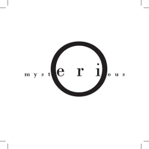
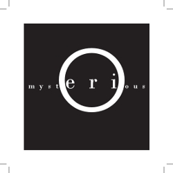
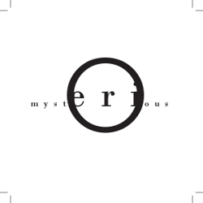
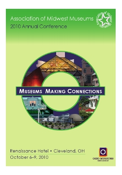
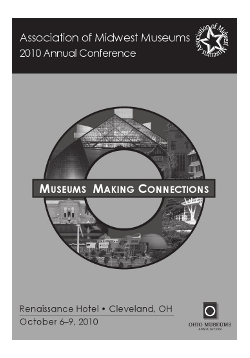
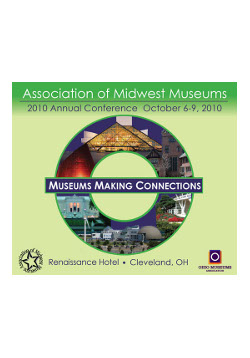
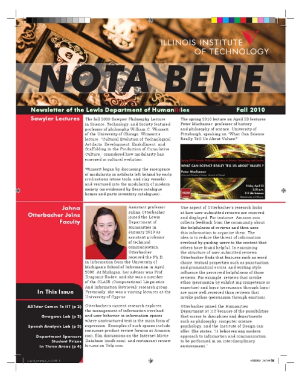
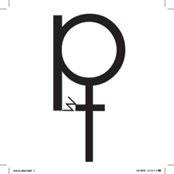

AndrewRoback.com
Design Projects
Welcome to my design gallery. Click on any image below for a larger version.
Wordmark Project
As a project for a document design course, I was required to create a perception of the word randomly assigned to me using nothing but the letters in that word.
  Program Cover
A team project to design the cover for the 2010 Midwest Museum Association Conference. The cover was modified and selected by the client (click here to view the final design).
  Newsletter
A team project to design a shortened version of the newsletter Nota Bene, a publication of the Humanities Department at IIT. Click on the cover image below to view a pdf file.
Letter Mark
A project where I designed a letter mark with three assigned letters (d,t,w).
